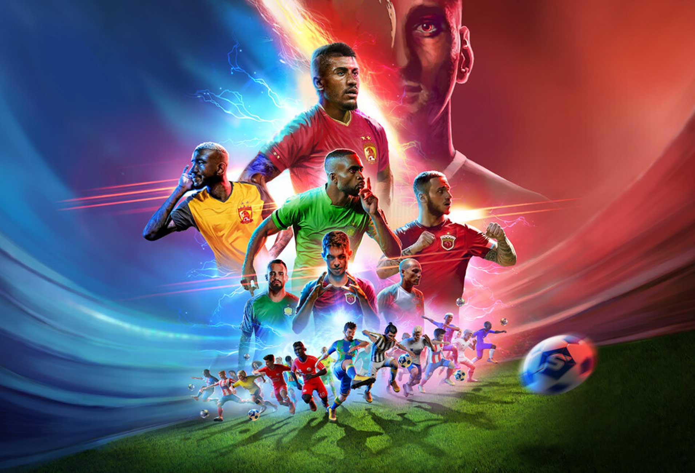
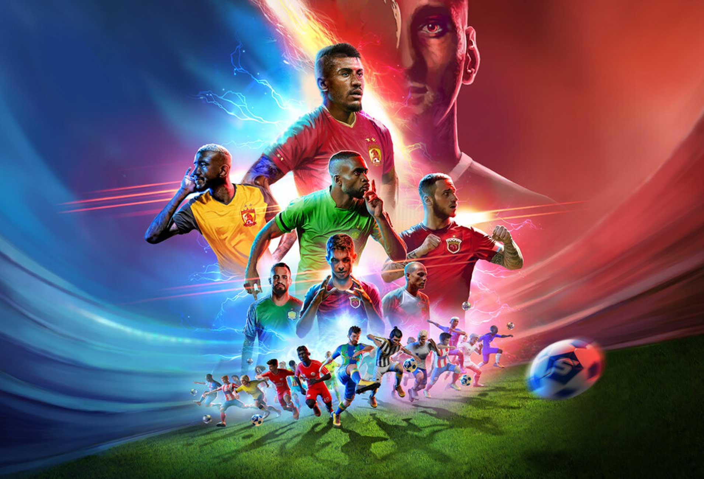
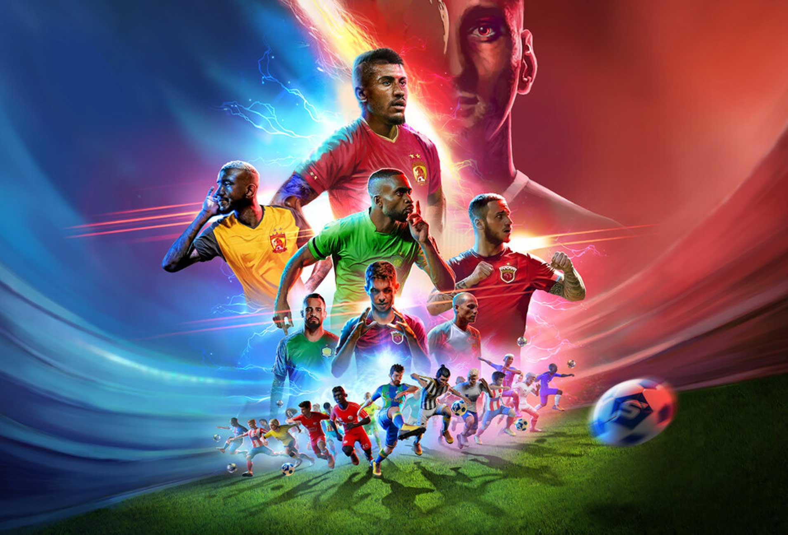

Portafolio
 

Joven dinámico, apasionado por el deporte y la música, con habilidades en tecnología e idiomas.
Soy un joven estudiante de 17 años, actualmente cursando mi formación académica en el prestigioso Colegio de la Inmaculada, Jesuitas. Mi educación se centra no solo en el desarrollo académico, sino también en valores como la responsabilidad, la solidaridad y el compromiso con mi comunidad. Mi curiosidad por aprender y crecer me impulsa a explorar diversas áreas de interés, desde los deportes hasta la tecnología y los idiomas.
El fútbol es una de mis mayores pasiones. A través de este deporte, he aprendido habilidades clave como el trabajo en equipo, la disciplina y la resiliencia, valores que aplico tanto dentro como fuera de la cancha. También disfruto participando en otros deportes, lo que me ha permitido desarrollar un estilo de vida activo y saludable. Estas experiencias me han enseñado a valorar la importancia del esfuerzo constante para alcanzar mis metas.
Otra de mis áreas de interés es la música, una actividad que me inspira y alimenta mi creatividad. Dedico tiempo a explorar distintos géneros, lo que me ha ayudado a cultivar mi sensibilidad artística y a encontrar nuevas formas de expresión personal. Además, poseo conocimientos en tecnología y un nivel intermedio de inglés, habilidades que considero fundamentales en un mundo cada vez más globalizado.
Mi objetivo es seguir creciendo y aprendiendo tanto en el ámbito académico como personal. Aspiro a aprovechar cada oportunidad para mejorar mis habilidades y poner en práctica los valores adquiridos en mi formación. Estoy convencido de que mi combinación de disciplina, pasión y dedicación me permitirá contribuir de manera positiva en cualquier proyecto o desafío que enfrente en el futuro.

Dirigir al equipo en torneos escolares y fomentar el trabajo en equipo.
Participación activa en actividades culturales y deportivas.
Estudiante regular con formación integral y académica de excelencia.